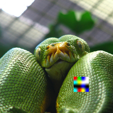
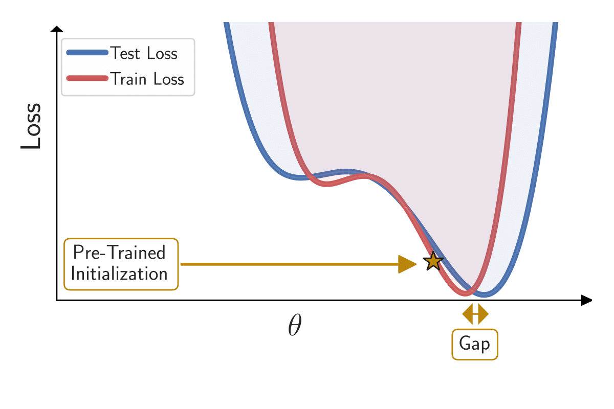
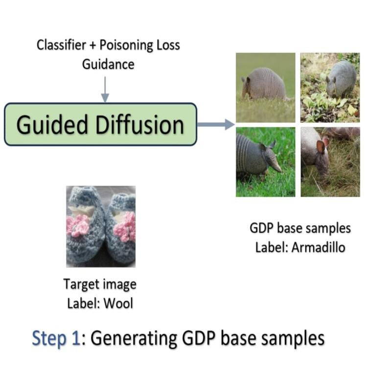
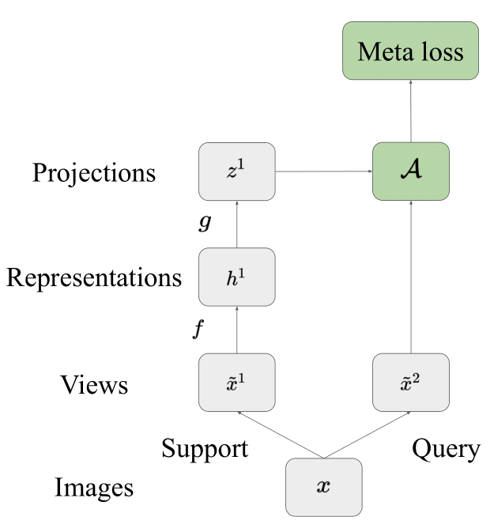

About
I am a Senior AI Researcher in the Vision Intelligence Team at the AI Center, Samsung Research America, where my work focuses on advancing vision-language understanding, generation, and reasoning. More recently, I have been focusing on long horizon planning, vision language action (VLA) models, and world models.
I earned my PhD in Computer Science from Johns Hopkins University, advised by Bloomberg Distinguished Professor Rama Chellappa, and completed my Master's at the University of Maryland, College Park, where I collaborated closely with Tom Goldstein. My past work spans generative models, vision-language models, and representation learning.
Selected Publications
* equal contributionSee my Google Scholar for the full list of publications.



